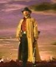
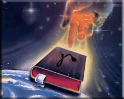
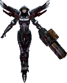

Forums galactiques > Assemblée Galactique : diplomatie officielle > Passage obligé : Présentations
Pages : 1 2 ... 20 21 22 ... 40 41
| Tsuul Respect diplomatique : 523  27/12 ETU 15:37 | Score : 12 Détails ****Un crépitement se fit entendre et un hologramme se forma devant l’Assemblée****
Un homme apparut. Il était grand, portait une longue tunique noire et les membres de l’assemblée pouvaient distinguer une sorte de tatouage qui lui prenait la moitié du visage. Salutation Comandants, Je me nome Tsuul, septième membre de la lignée des Rois Somorati. J'appartiens à la guilde et je me ferais un plaisir de négocier ressources, vaisseaux ou planètes avec n'importe quel partisan de la Démocratie Universelle. Cependant mon peuple a été durement éprouvé par l'Apocalypse et il s'en est suivit une importante période de crise politique (Hrp: Oui maman je révise mes examens) et cela m’empêche donc d’être tout de suite opérationnel. L’idée qu’un roi lutte pour la démocratie peut vous faire sourire mais comme tout les Rois qui m’ont précédé passé l’Epreuve et j’en suis sortir indemne. J’ai juré sur le Livre de protéger et de tous faire pour enrichir mon peuple. Je porte maintenant fièrement le Sceaux de Pouvoir signe de la Force du Roi, de la confiance que m’accorde mon peuple. Je cherche une coalition qui pourrait me prendre sous son aile, et je me ferais un devoir d’accorder à ses membres des « Tarifs Préférentiel ». Je dois maintenant me retirer et annoncer à mon peuple que nous ne sommes plus seul, l'age de la Solitude est maintenant terminé. ****Un nouveau crépitement et l'image disparut**** | ||
| Coubo Respect diplomatique : 11  27/12 ETU 21:39 | Score : 11 Détails "Il est temps de convoquer le commandant Coubo. Entrez les coordonnées et amenez-le."
Un officier exécuta l'ordre et valida la requête qui eut pour résultat de démarrer le téléporteur. "Recherche en cours.........Localisation effectuée. . ... ..... Téléportation en cours. 1%... 2%..." Pendant ce temps... "Plic...ploc...plic..plouf.....AHAHAHAHAHAAAAAHAHAH !!...plic.....ploc....pzionf ! Comment ça pzionf ? Hein ?!? Mais qu... Zzzzzzzaap !" Au commandement général... "100%. . ... ..... Téléportation effective. Taux d'erreur : 0.001%. "Commandant Coubo, je prés.... mais bon Dieu, qu'est ce que ça veut dire ?" Le commandant était apparu dans son plus simple apparat, tout juste couvert de mousse et tenant une brosse d'une main et un petit savon jaune en forme de canard de l'autre. Son air décontenancé valait bien celui de l'amiral. "Euhhhhhh..." Voyant qu'il ne se trouvait pas chez n'importe qui, il se resaisit et fit le salut martial comme il se doit : "Mon commandaaaïïïïeee !!" Le coup de brosse involontaire fit rire quelques subordonnés dans la salle. L'amiral cacha un rictus amusé derrière sa moustache tout en pensant que les commandants ne sont plus ce qu'ils étaient, qu'avec des énergumènes pareils, la galaxie n'ira pas loin comme ça et que de nos jours, les jeunes sont des olibrius écervelés et étourdis et puis c'était mieux avant et en plus 'ya plus de saison, mais que voulez-vous y faire ma brave dame, ah mais je vous jure... "Euh, bon, Commandant Coubo, donc... Si nous vous avons amené ici, c'est pour que vous vous présentiez et pour que nous puissions vous recenser. Alors on vous écoute..." "Oui, euhhh...Je suis le commandant Coubo, tout jeune promu de l'Académie militaire du système 4US-41KRI. Je..." "Merci bien, ça ira. Nous sommes débordés en ce moment, des tas de jeunes recrues pensent pouvoir résoudre les problèmes internes de la galaxie alors nous croulons sous les inscriptions, voyez-vous... Nous allons vous renvoyer chez vous, ne vous inquiétez pas...d'autant que vous commencez à devenir bleu." "M-m-m-er-c-c-c-c-ci inf-f-f-f-f-fini-m-m-m-m-ment !" "Inversion de la téléportation activée... 1%... 2%..." Pendant ce temps, le commandant croisa un confrère en combinaison de ski stellaire, un autre en costume de clown qui sortait des cotillons de sa manche et un troisième qui était dans la même situation vestimentaire que lui, mais qui lui avait la malchance d'être sous la douche... Juste avant la téléportation, le commandant eut juste le temps de voir l'air parfaitement stupéfait, voire franchement choqué de l'amiral, qui ensuite se prit la tête entre les mains par désespoir. Il entendit aussi l'ordinateur central crier nonchalemment "Erreur générale due à l'exécution de la téléportation. Veuillez redémarrer le système." Ensuite, il se retrouva dans la baignoire, mais il n'était pas seul. Il lui fallut 5 secondes pour sortir la tête de l'eau et de voir le regard consterné de la dame avec qui il se trouvait dans la baignoire. Il eut tout de même la délicatesse de dire d'une manière détachée : "Bonjour chère voisine !" | ||
| aigle noir Respect diplomatique : 14  29/12 ETU 11:27 | Score : 7 Détails Un grand aigle noir arriva en volant très vite et en se prenant par la même occasion le mur du bâtiment .
Il rentra alors dans le bâtiment . Je suis l'aigle noir ,je viens d'une planète couverte par les arbres et rempli d'aigle de toutes les couleurs . Les humains qui nous dominait autrefois sur une planète appelé Terre ,nous servent d'esclaves sur nos planètes . Je suis ravi d'avoir réussi enfin a rentrer en communication avec vous . | ||
| Lucifang Respect diplomatique : 2 30/12 ETU 22:48 | Score : 2 Détails Hé Yoh comment tu va?
Ca fais un moment qu'on a pas tuer! Toujours dans l'éspionnage? Je me presente Lucifang Ma vocation: aucune! Mon passé: oublier! Mon but: tuer! Je loue mes services à des prix modeste! | ||
| Lord_Oblivion Respect diplomatique : 21  31/12 ETU 00:20 | Score : 3 Détails Un homme engoncé dans une grande armure s'avança lourdement dans la vaste salle.
Dans un grand bruit metallique, il s'assit à son siège, mais comme il vut que tous les regards étaient poin,tés sur lui, il se releva et se prepara à son discours. "Bonjour commandants! Mon nom est Sylvo Oblivion, ou Lord Oblivion. CErtains me conaissent déjà (beta2) et je suis de retour. Mon point de vue politique? Et bien sachez que je suis un démocrate pur et convaincu. Merci de m'avoir écouté" Il se rassit bruyamment. | ||
| King Kat Respect diplomatique : 220  31/12 ETU 14:42 | Score : 14 Détails *Un joli petit minou arriva a pas feutré devant les portes de l'assemblée galactique. Il fit un petit détour par la cuisine, et aprés avoir vandalisé tout ce qui pouvait l'être, il se dirigea vers l'auditoire.
Il s'assis, regarda à droite a gauche, et remuant la queue, il eut a peut pres ce language :* "Miaw miaou miam Miaw mia miou miaouu mou mama mia miaou miaou mi.. .. .. .." *Il regarda un moment les commandants, fit 3 tours sur lui même et tapa 7 fois sa queue par terre.* "Hum.. je voudrais bien vous y voir sans poche, ou voulez vous que je mette un traducteur ? autour du cou ? j'ai déja le collier anti puce.. donc ca me suffit !.. mrraouu.. *prend un bout de papier* " Bien le bonjour, Je suis un pauvre petit minou sans défense qui aime les carresses et les calins. Je vous salue donc tous bien bas et espere que vous serez gentil avec moi.. euh... P.S:j'aime bien quand mon me gratte entre les omoplates ^___^' Voila... j'espMiax mia miaaaw mi que vMiammaa miaw miou ..put.mi . de Tradctmiou miaou a la Cmiux qui fait chmiaaaw !!!" *Le chat retourna d'ou il était venu en poussant d'ignobles jurons (dumoins on pouvais penser que s'en était )* | ||
| Wulfgard Respect diplomatique : 13  31/12 ETU 18:24 | Score : 13 Détails L'image holographique d'un homme à l'air insignifiant apparut devant des membres de l'Assemblée Galactique présents. Vêtu d'un simple uniforme noir sans distinction apparente hormis un écusson représentant un loup hurlant, il semblait n'être qu'un officier quelconque d'une force jusqu'alors inconnue.
Commandantes, commandants, membres de l'Assemblée Galactique. Après de nombreux mois d'errance à travers la galaxie, mon peuple et moi, Wulfgard, commandant des Loups Hurlants de Lupus, venont de nous établir sur un nouveau monde vierge. Les Loups Hurlants sont un peuple pacifique ne cherchant qu'un endroit tranquille pour nous établir. Ce monde, nous l'avons enfin trouvé! C'est donc en tant que commandant de Lupus que je viens présenter les salutations de mon peuple aux membres de cette Assemblée. Ne pouvant quitter notre système solaire à l'heure actuelle, nous travaillons à étendre nos connaissances afin de remédier à ce léger problème. Dès que nous serons en mesure de le faire, nous enverrons un représentant à l'Assemblée. En attendant, nous communiquerons par système holographique avec ceux qui désirent entrer en contact avec nous. Ces messages devront être envoyés aux coordonnées 913-18278. Merci de votre attention. L'image crépita quelques instants, puis disparu aussi soudainement qu'elle était apparue. | ||
| Leraxx Respect diplomatique : 5  02/01 ETU 00:03  | Score : 6 Détails salutation a tous,
je suis ici devant vous pour vous annoncer la fin des guerres pour le controle de mon systeme natif que vous nommé le systeme 829. je suis le commandant LERAXX, le seul a avoir reussi a unifier les differents peuples de mon systeme natif. Je me prensente donc a vous comme nouveau souverain legitime du systeme 829, je vois dans l'ouverture de mon peuple aux reste de la galaxie un grand pas vers notre prosperité et un petit pas de plus dans la pérénité de l'humanité. cordialement, | ||
| Kerrigan Respect diplomatique : 13  05/01 ETU 13:43 | Score : 13 Détails Les portes de l’Assemblée s’ouvrirent délicatement, laissant entrer une silhouette. Petit à petit, on arriait à décrypter ces traits ce qui nous faisait penser que c’était une femme… étrange. Elle progressa dans l’allée centrale sous les regards étonnés des commandants présents qui n’avaient jamais vu une chose pareil. Ses cheveux, si on peut appeler ça des cheveux, s’organisaient comme une sorte d’araignée sur ça tête, ou une pieuvre. Dans son dos, on voyait comme des ailes, mais sans plumes, juste constituées d’os. Elle été habillée en noire et ses main été munies de petites griffes. Tout cela lui donnait un aspect menaçant, morbide.
Elle monta sur l’estrade et commença à parler… Commandants, Bonjour. Je me présente : Kerrigan, reine de la nuée Zerg. Je suis à la tête d’une armée loyale, obéissante et sans pitié prête à se sacrifier pour moi. A l’origine, nous venons d’une autre galaxie où trois peuples vivaient : les Protoss, les Zerg et les Terran. Au fil du temps, mon peuple s’est imposé et nous avons réussi à contrôler toute notre galaxie. Mais nous avons appris que beaucoup de protoss et de terran s’étaient enfuis. Je suis donc venue dans cette galaxie afin de l’explorer, d’étendre mon empire et de tuer les quelques Terran et Protoss restant. Au passage, j’annonce que je suis à la recherche d’une coalition. Celles qui sont déjà existante peuvent me contacter par MP. Bien, je vous salue. Et elle quitta l’Assemblée avec un visage neutre et inexpressif… | ||
| Plastohm inc. Respect diplomatique : 20 05/01 ETU 20:00 | Score : 8 Détails Un hologramme apparut, il représentait un homme avec un masque a gaz sur le visage :
« Bonjour à vous commandants, je me présente, je suis le Baron Hans Von Lawranshome, leeder du groupe Plastohm inc. Mon entreprise est une fabrique d’armement de haut niveau, on doit d’ailleurs à ma firme la terrible bombe à impulsion ionique et le blaster à répétition saccadé. Moi et mes collaborateurs seriont fier de vous fournir en armement quel qu’il soit, nous ne prendrons pas par aux combats sauf si nous y sommes obligé. Ah oui, dernière chose, nous avons ouvert un magnifique bar, on y est servit par d’adorable chaton et les mammouths stellaire que l’on y sert sont exquis. Salutation et bonne continuation. » L’hologramme disparut, mais certains commandants n’étaient pas content, ils voulaient l’adresse de ce fameux bar a chat. | ||
| Grodjirah Respect diplomatique : 256  05/01 ETU 20:13 | Score : 3 Détails Huck huck toi me plaire! Orcs aimer armes qui lancent des traits de feu, ça bon pour chasse a elfe!
Dans ton bar, être possible de trouver peau d'elfe marinée dans eau chaude? Une boisson désormais rare sur mon monde car plus y avoir beaucoups d'elfes. | ||
| Le vendeur d'yeux Respect diplomatique : 218  06/01 ETU 01:58 | Score : 12 Détails -Extrait vidéo d’une boutique d’horlogerie- Alentours de Vher, secteur artisanal.
La scène est cadrée par des horloges et pendules qui se balancent, laissant leurs bruits mécaniques couvrir la bande son ; de vieux objets encore en fonctionnement dirait t’on. Il fait sombre à l’intérieur de l’horlogerie, mais de temps à autres, des éclats de métal chaud jaillissent face à la caméra. A ces instants, on perçoit grâce aux reflets des cadrans l’inverse d’une scène hors champ : Au fond de la boutique, un homme en tenue de forgeron est courbé sur un objet qu’il entaille, frappe, poli, incruste, frotte, nettoie, trempe, visse, dévisse, revisse… Les horloges soudain sonnent presque en même temps. Un brouhaha qui monte à l’instant où l’homme termine, dans son dernier élan de fabriquage, son objet bizarre. Il le brandit, son trophée, son espoir. Parmi les Ding-Dong incessants des objets, les Zwiiiit, Zwoook et les Tic tic tic tic tic tic d’une ou deux machines enfouies dans un recoin encore plus enfoui, on l’entend crier : Ouuiiiiii !!!! J’aii réussiiii !! Elle fonctionnneee !! Elllllleeee fonctiooooonnnneee !! Barnabé !! Prépare mes affaires, vite !! -Tout de suite monsieur On voit alors passer une ombre frêle et on entend la porte de la boutique se refermer dans son Cling. Mais, qu’est ce qu’il a construit ? Au même moment à l’assemblée galactique, les écrans se brouillent un instant, puis, soudain, l’image apparaît. Elle montre ce même homme, mais du point de vue de ce nouvel objet… Puis tout divague. En fait, il ne s’agit que de ce soi-disant horloger qui dépose l’objet sur la table. Il approche ses mains. On entend des clic des toc, puis la porte de la boutique se fermer a nouveau. Certainement l’autre personnage. D’une voix forte et passionnée, l’horloger dit à l’autre : - Ca y est !! je peux leur parler !! Et ils peuvent peut être même me voir en ce moment !! Apporte moi ça tout de suite, on prend le contrôle de la planète ce soir, finalement. Une voix frêle répond alors qu’apparaît à l’image, derrière l’épaule de l’homme, le visage d’un jeune garçon tâché de cambouis. - Bien monsieur, alors l’œil fonctionne ? - Evidemment qu’il fonctionne, je ne me trompe jamais. Ce soir, Barnabé, nous allons diriger Vher, puis cette planète, Œil de Vher !! Tu te rends bien compte qu’on est les seuls ici à savoir que d’autres planètes sont peuplées d’extraVherriens ? N’oublie pas, si tu parles, je te tuerais. - Oui - Tu es prêt ? Ensuite, on se présentera peut être à ces gens d’ailleurs… Si ils ne sont pas hostile bien entendu héhé. - Oui - Tu as quelque chose à ajouter ? - Non - Tant mieux, il ne faut pas trop que tu parles, tu risquerais de tout gâcher. - Bien monsieur Ils prennent quelques sacs divers dont on ne peut savoir le contenu puis ils s’en vont précipitamment, peu après que le jeune garçon ait reçu une tape sur la tête… et qu’il revienne appuyer sur l’objet. La transmission vidéo s’arrête. | ||
| Plastohm inc. Respect diplomatique : 20 06/01 ETU 02:34 | Score : 2 Détails "Hélas mon cher Grodjirah nous ne vendons plus se genre d'article depuis le boycotte dont nous avons étés victime pour se genre d'article. Mais nous avons du jus de boulet de première qualité."
| ||
| Herdes Respect diplomatique : 5  07/01 ETU 22:34 | Score : 5 Détails Un homme apparut dans la salle des présentations,Vêtu d'une cape et d'une capuche,et, était pourvu d'un bâton.
Bonsoir, Je suis herdes,le prophète! Les circonstances me poussent à venir me blottir ici J'ai été banni de mes terres! mon peuple c'est retourné contre moi,car il ne croyaient plus en la prophétie! Je ne suis pas la pour m'amuser je viens de la part du puissant. Peut me connaissent,mais mes ailleux ont développer des affinités il y'a bien longtemps...serait vous les retrouver? Assez papoté! il me faut vous parlez! Il montra la foule du doigt Vous,oui vous! Je suis le fruit d'un amour interdit, le plus détestable ,votre lanterne rouge,celui qui ce cache,celui qui efface toute les traces , Herdes le prophète vous convertira! Herdes disparut , à la place un papier ancien s'y trouver: Maman, j'ai peur !… Ne crains pas mon enfant. Avance au large et sors de toi-même. Regarde autour de toi : tout ce qui est moche, tous les gestes de haine, de guerre… Avec MOI, tu n'as rien à craindre, " car J'ai vaincu le monde " | ||
| Diomede Respect diplomatique : 21  08/01 ETU 00:52 | Score : 8 Détails Un homme entra dans la salle du conseil et ce dirigea vers le pupitre pour prendre la parole
Commandantes commandants bonjours a tous. Je me présentes commandant Diomede, il y a maintenant plusieurs semaines que je suis présents sur La Galaxie des Exilés, mais n'ayant pas développer l'hyper fusion je n'avais pas trouve utile de me présenter, maintenant que cet technologie me permet de visiter les systèmes voisins et donc de vous côtoyer il est l’heure de m’annoncer à vous. Ainsi je suis arrive sur cette Galaxie, je ne sais pas trop comment en fait, tout ce que je sais est que j’étais avec mes loyaux capitaines entrain d’affronter un tyran qui souhaitait assujettir mon ancienne galaxie. Nous nous affrontions dans une bataille interstellaire près de notre planète mère, quand cette dernière pour je ne sais quel raison explosa en milliards de morceaux et forma une boule de feux gigantesque déclenchant une sorte de trou noir ou de tempête galactique, je ne sais comment le nommer. Des milliers et des milliers de vaisseaux des deux camps furent anéantis. Mon vaisseau amiral ainsi que quelques vaisseaux de ma garde furent épargnés par l’onde de choc mais emmener par cette tempête. C’est ainsi qu’on ce trouva près d’une planète inhabité dans un système inconnu. Nous en fîmes notre nouvelle capitale et avons explorés le reste de ce système ou nous avons rencontrés d’autres commandants. Nous avons développer chacun nos nouvelles planètes dans une entente cordial. A une exception près, un commandant trop gourmand a voulu prendre le contrôle complet du système, bien mal lui en prit. Mais comme toujours même a des années lumières de ma galaxie il existe toujours les même personnages plein de haine qui ne cherche que la domination. Alors que mes chercheurs développent un moyen technologique pour nous permettrent de retourner dans notre galaxie, moi et quelques vaisseaux explorons cette galaxie à la recherche de planètes inhabitées pour y trouver les ressources dont nous allons avoir besoin pour ces recherches, qui s’annoncent longues et laborieuses. Sur ceux je m’en retourne et vous souhaite à tous une bonne continuation. | ||
| Nalcay Naokimary Respect diplomatique : 117  09/01 ETU 01:03 | Score : 12 Détails *Oh Déesse, suis-je donc seul sur cette planète…*
Un être chetif, recourbé sur lui-même emerge d’un tas de decombres. La poussière vole autour de lui en voluptes de fumée tourbillonantes, insufflées par les vents ravageurs qui tannent la surface de ce monde en ruine. *Ma Déesse, ou êtes-vous…* L’homme se relève, machinalement. Une aura semble se degager de se personnage semblant jaillir de son propre cercueil de debris. Lentement, il entreprend d’avancer parmis les debris gisants ca et là, enjambant les cadavres calcinés tels des blocs de pierre blanches, tantôt zebrés de rouge, tantôt de noir. Les cendres omniprensentes font tousser la silhouette fragile, comme naissante dans ce monde desolé. *Mais oui…. Tout est clair desormais… Cette explosion…* Telle le fil d’une lame aiguisée, une reminescence viens frapper le commandant Nalcay Naokimary. La violence du choc le fait s’ecrouler, un cadavre qui ne semble guère plus vivant que les autres formes autrefois humaines qui jonchent desormais le sol. *mais depuis combien de temps* Nalcay, autrefois si fier d’avoir tenu tête a son père, autrefois si imbu de lui-même, lui qui avais tout donné pour sa mère patrie, lui qui avais sacrifié sa vie, sacrifié son sang, lui… Lui et encore lui… *desormais tu est seul… C’est ce que tu as toujours voulu n’est-ce pas ?* *imbecile, pusilanyme… * *que te reste t’il maintenant…* *Tu n’as même pas d’holomontre pour compter les heures qu’il te reste avant de rejoindre tes frères et tes soeurs dans l’absolution du Grand Neant…* Un chuchottement pourtant, interpèle le piètre commandant. La, . La, non loin d’un defunt dont l’identité avait été effacée par un énorme bloc de roche, et dont les seuls membres restant dessinais une croix obscène, telle l’amante fatiguée, attendant que son partenaire se retire… La, non loin de cette depouille lubrique, ex humanoïde, quelque chose murmurais. Un echo qui se repetait, chaque fois plus fort, chaque fois plus saturé de parasite. Une radio. Nalcay se rua sur le volume couvert d’une epaisse couche de poussière humaine, pour decouvrir l’espoir. L’espoir ! L’espoir d’etre a nouveau, l’espoir d’etre un nouveau, l’espoir du renouveau… Palpable, sableux, qui glissais deja entre ses doigts assèchés, l’espoir. | ||
| zirkal Respect diplomatique : 0 10/01 ETU 15:34 | Score : 0 Détails commandant, commandante bonjour a tous
je me presente, je m'appelle Zirkal le songeur comme on m'appelle. Je suis a la recherche d'une coalition sympathique. Je connais tres bien les bases pour se devellopais mais je ne connais pas les lois de la g1 | ||
| Leraxx Respect diplomatique : 5 11/01 ETU 10:39 | Score : 0 Détails commandant Zirkal, si vous le souhaité le peuple Dérâe que je gouverne vous apporte de l'aide nous seront ravis de préter nos services armées.
le peuple Dérâe sort d'une longue guerre mes cherches maintenent a ce developper pour devenir prospére. commandant leraxx | ||
| Le Juste Respect diplomatique : 41  11/01 ETU 11:35 | Score : 12 Détails Une requête est envoyée pour s’adresser à l’assemblée par un commandant encore inconnu.
Après acceptation de la demande par le greffier, une image Holographique apparaît. L’image est assez nette pour voir un homme se tenant debout, droit comme un i, au centre d’une vaste salle de réunion. Les parois de la salle ainsi que le sol sont recouverte de marbre blanc, la grande table de réunion semble faite d’ivoire, tout comme les sièges. - Salutations commandants de l’assemblée. Je suis le généralissime Hignus Halfear, grand commandant de l’empire d’Ysash. Nos techniciens ont enfin réussit à établir la communication. Je vous annonce donc que nous ne supporterons aucune agression et sommes prêts à… - SHHHHHHRRRRKKKKKKRRRKRKKRRRRIIIIIKKKKK - …rutis va, vous êtes en train de fouttre en l’air tout le travail de nos hommes qui ont récuperé cette machine! Un autre homme était apparu à l’image à la place, ne laissant apparaître que son dos. Ses longs cheveux blonds cascadaient jusqu’au milieu de son dos. - Voilà Meister, la communication est établie. - Vous êtes sûr que ça fonctionne cette fois ? - Oui monsieur. L’homme se tourna alors vers l’analyseur holographique. Il portait un masque cachant la majorité de son visage. Il s’assit dans un fauteuil à l’air confortable et sourit légèrement. - Commandantes et commandants, je vous adresse toute mes plus sincères salutations. Je suis heureux d’avoir pu arriver à temps pour empêcher cet homme de dire trop de bêtises. Comme il l’a dit, il s’appelle Hignus Halfear, il est le Chancelier du monde d’Ysash. Il appelle ceci un empire mais à l’échèle des données que j’ai sur vos propres empires ceci est une appellation bien trop exagérée. Il eut un petit rire clair et presque enfantin. En effet, je me présente, on m’appelle Le Juste et je suis à la tête de la Yser Company, première compagnie marchande de notre monde, et par ce fait, Grand Décisionnaire au conseil des 6. Ceci n’est pas forcement ce que certains pourront appeler un pouvoir décerner par le peuple, mais nous contrôlons désormais la totalité des institutions de notre Monde. Sur ce, je vous avoue que je suis très heureux de pouvoir ouvrir les portes de votre assemblée pour m’y présenter et vous annoncer l’arrivée de ma compagnie parmi vous. Je vous souhaite à tous une bonne continuation et une bonne journée. L’hologramme s’efface alors laissant de nouveau place au commandant. Cette nouvelle image le montre entrain de s’énerver contre un homme à l’air chétif. - Mais enfin bougre d’âne, je ne veux pas savoir vos excuses, remettez moi tout de suite la communication avec cette fichue assemblée galactique ! L’image disparaît alors complètement, laissant certains commandant se demander la légitimité de ces actions, cependant le pouvoir étant apparemment entre ses mains, ils devraient bien faire avec. | ||
| bloodywizard Respect diplomatique : 21 11/01 ETU 19:58 | Score : 6 Détails * Un hologramme apparut sur les écrans de l'assemblée, et une silhouette que personne n'avait vu depuis longtemps : *
Bonjour à tous, commandants, Cela fait maintenant bien longtemps que personne ne m'avait vu ici, mais, infiniment déçu par les trahisons successives dans notre dernière tentative pour reprendre le Gouvernement aux dictateurs qui le tenaient, j'avais décidé de me retirer de la vie politique et de prendre ma retraite sur une petite planète isolée. L'orage magnétique ayant très sévèrement touché cette planète, j'ai du sortir de ma retraite pour rétablir l'ordre... Et c'est ainsi que me revoila. J'espère que les nouvelles générations réussiront là où la mienne a échoué, à savoir rendre cet univers un peu meilleur et plus sûr. Sur ce, lorsque nous auront rattrapé notre retard technologique, je me présenterai en personne parmi vous. * L'hologramme s'éteignit * |
Pages : 1 2 ... 20 21 22 ... 40 41
Forums galactiques > Assemblée Galactique : diplomatie officielle > Passage obligé : Présentations